Big Orange Crayonmusical thingsPopfest New England 2006! The Elevens, Northampton, MA October 6th-8th, 2006 Another awesome Popfest! Of course, all the bands I heard before were great, but there were also some new ones that I enjoyed a lot, and that's always the best part. So in that respect Locas in Love was a big highlight! My German is so rusty that I could only understand a few lines, though. As usual, I had to miss the first day (which was too bad because I really wanted to see the Icicles). This time it was on a Friday, too! I should have been able to make it! The only problem was that I was still under the influence of The Twelve Hour Time Difference Jet Lag of Doom, since I just got back from China at the beginning of the week. I had to miss the early show on the third day for the same reason! But honestly, all the bands that I was awake enough to see were totally rad! Anyway, pictures! Also this was my first Popfest since I started using a digital camera, so they're in color now! 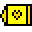 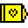 The Lil' Hospital 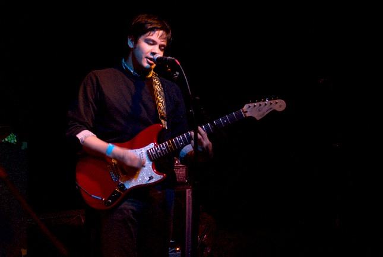 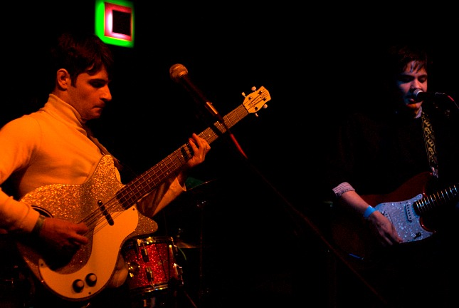 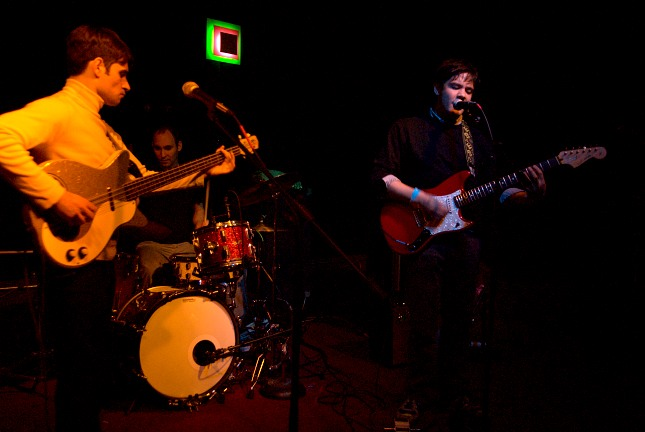 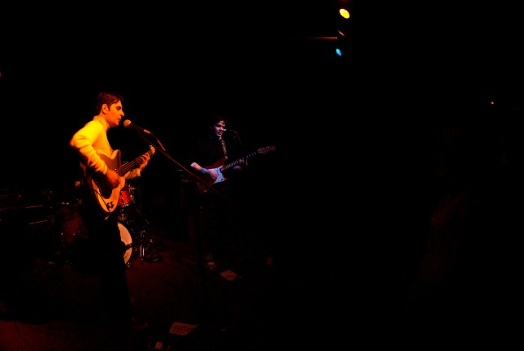 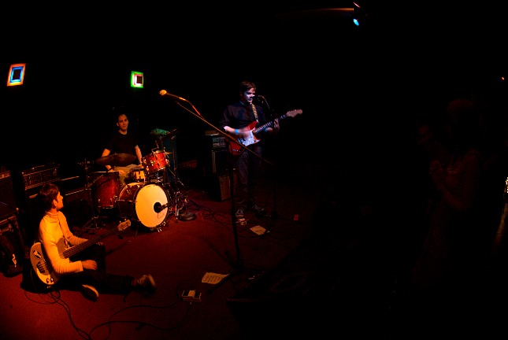 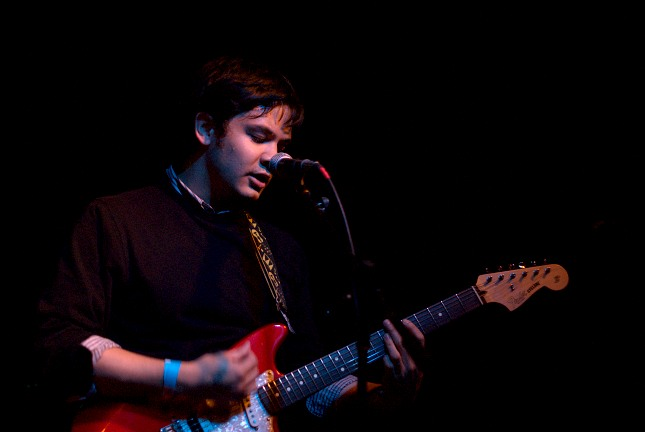 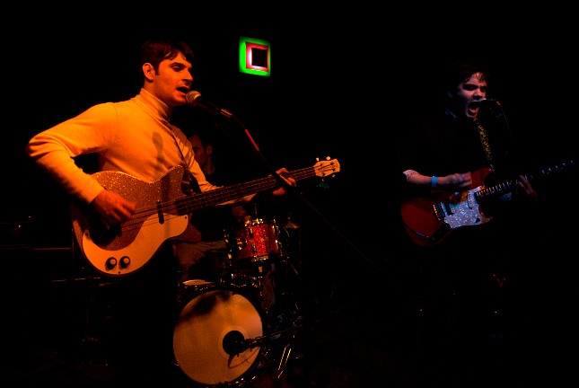 School for the Dead 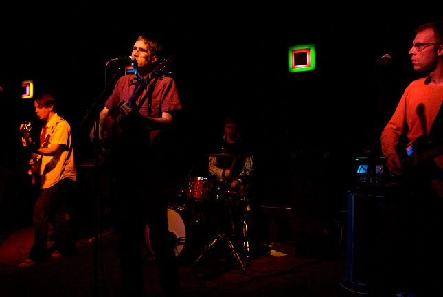 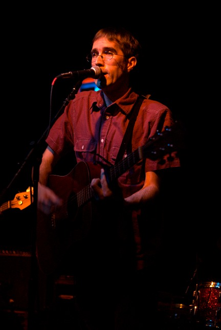 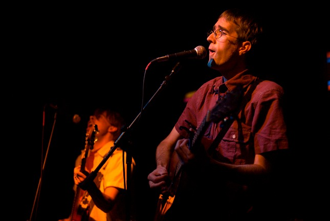 The Besties 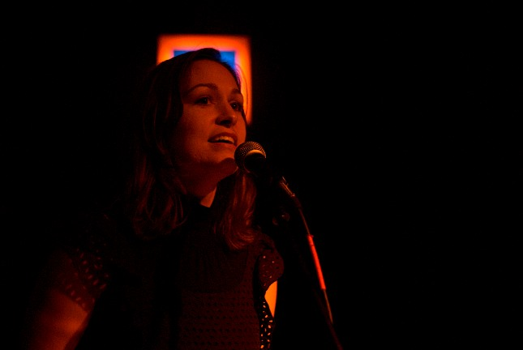 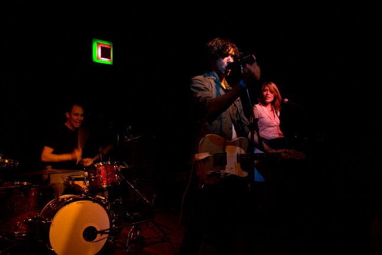 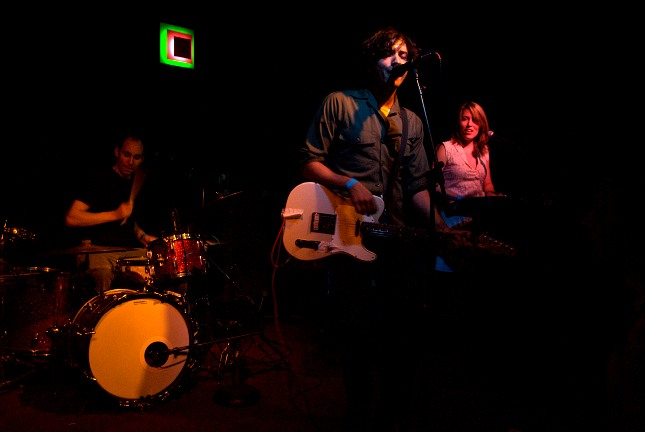 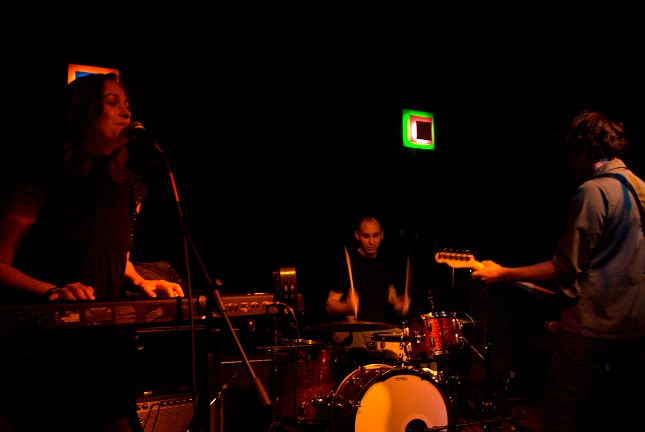 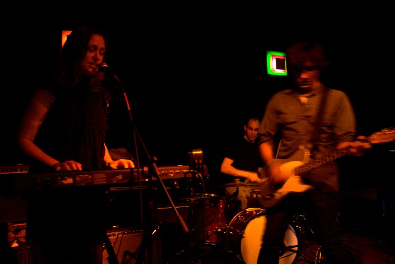 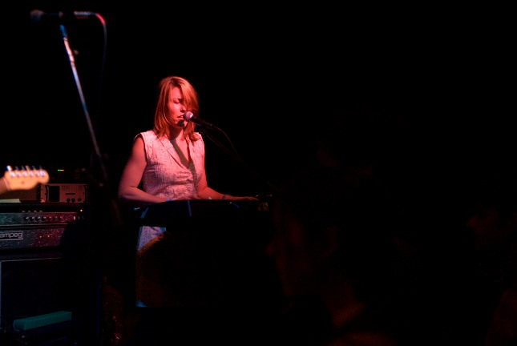 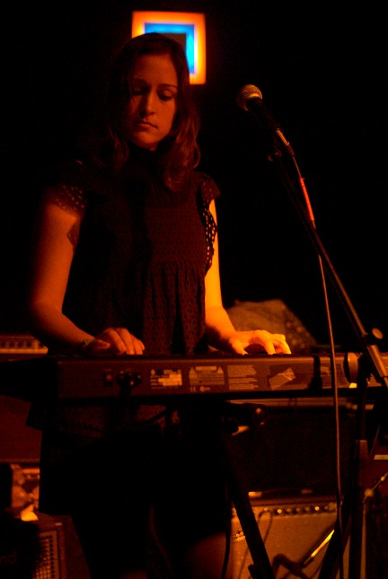 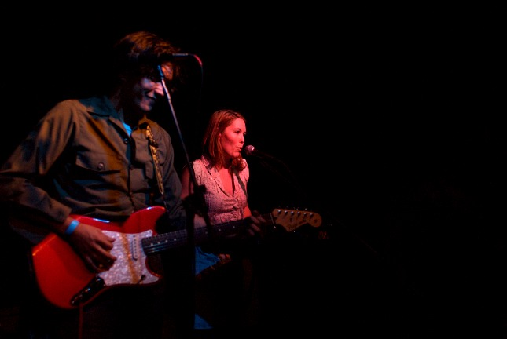 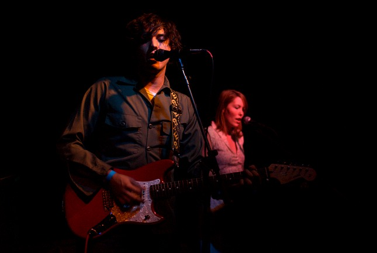 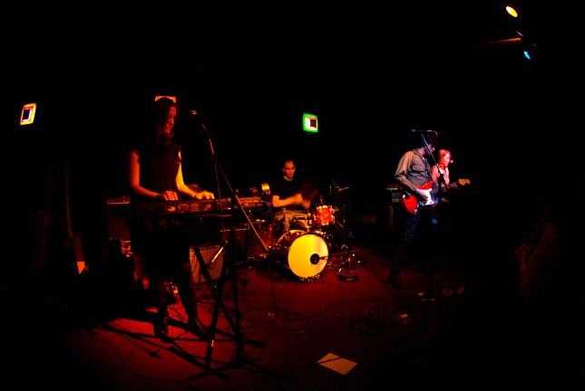 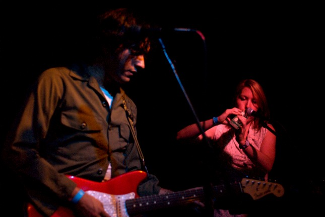 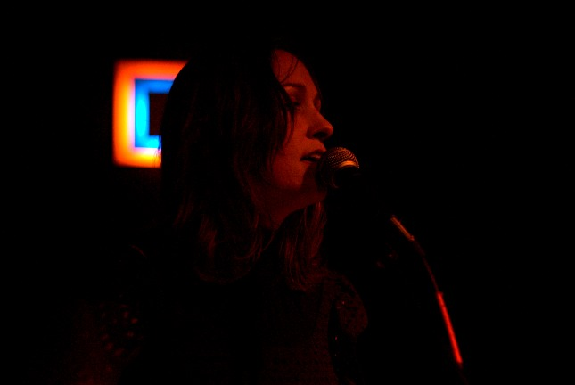 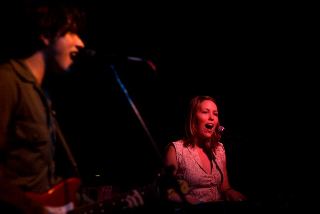 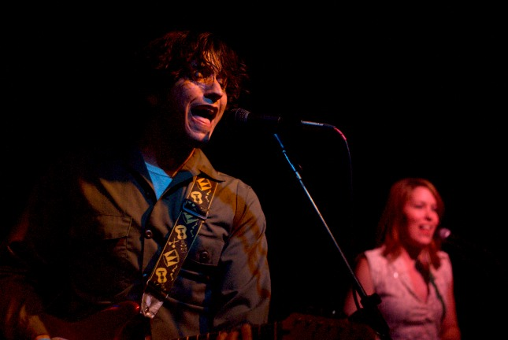 Please don't use these elsewhere unless you are in one of the bands or are a nice person. If you would like larger versions of any of these, just write and ask and I'll send them to you (unless you want a million different ones, in which case I might be too lazy). |